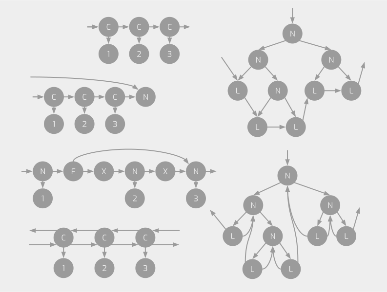

About
I am a student in Waseda University (Japan) majoring Computer Science especially design and implementation of programming languages.
- For a list of publications and my job, please refer home.
Research
I am interested in the design and implementation of programming languages. Currently, I am creating a new language named \(\lambda_{GT}\).
\(\lambda_{GT}\): A purely functional language that can handle graphs as first-class data

Graphs are a generalized concept that encompasses more complex data structures than trees, such as difference lists, doubly-linked lists, skip lists, and leaf-linked trees.
Normally, these structures are handled with destructive assignments to heaps, which is opposed to a purely functional programming style and makes verification difficult.
We propose a new purely functional language, \(\lambda_{GT}\), that handles graphs as immutable, first-class data structures with a pattern matching mechanism based on Graph Transformation and developed a new type system, \(F_{GT}\), for the language.
Our approach is in contrast with the analysis of pointer manipulation programs using separation logic, shape analysis, etc. in that (i) we do not consider destructive operations but pattern matchings over graphs provided by the new higher-level language that abstract pointers and heaps away and that (ii) we pursue what properties can be established automatically using a rather simple typing framework.
HyperLMNtal: A syntax-directed hypergraph transformation formalizm
The general definition of a hypergraph in graph transformation formalizms consists of a vertex set, an edge set, vertex-to-edge correspondences, labeling functions, etc., and matchings and rewritings of subgraphs are defined using a morphism with these sets.
This is opposed to a syntax-driven semantics like those of \(\lambda\)-calculus or \(\pi\)-calculus.
We propose a new syntax-driven semantics for hypergraph transformation by incorporating the syntax and semantics of name hiding in process algebra into Flat LMNtal, a (non-hyper)graph transformation formalizm.
We also prove several properties on this and confirm its validity.
Music
I am currently into creating music.
Software
Here are a list of programming languages that I often use.
- Ocaml, Haskell, TypeScript (React), Elm, C++, Python, Rust, a little bit of bash script, Java (though I do not prefer much)